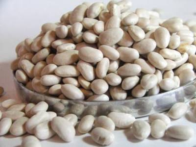

Este grupo de alimentos es muy importante porque nos aporta energía, proteínas y fibras. A continuación podemos ver algunos ejemplos:
Cereales | Leguminosas | Derivados |
|
|
|
Se recomienda a niños y adolescentes consumir entre 5 y 7 porciones diarias de este grupo de alimentos. Por ejemplo media taza de lentejas, garbanzos o porotos cocidos sería una porción de leguminosas. Una porción de pan serían tres rebanadas finas, una porción de arroz sería media taza cocida, una porción de harina de maíz sería media taza cocida también.
